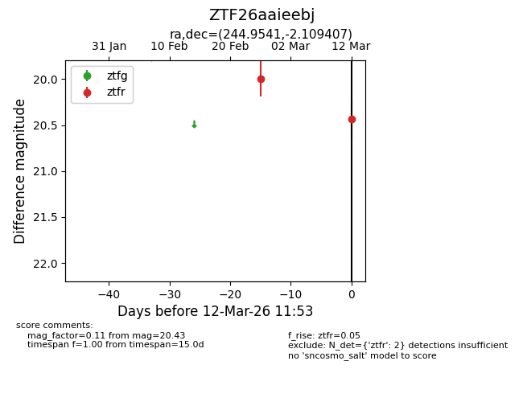
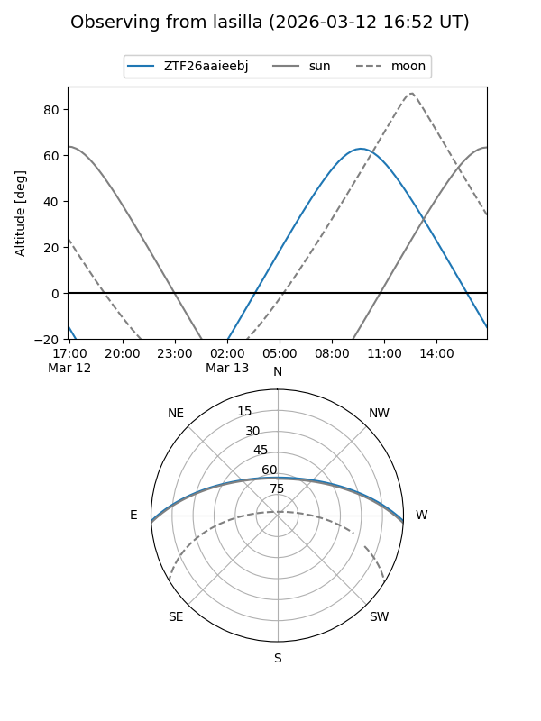
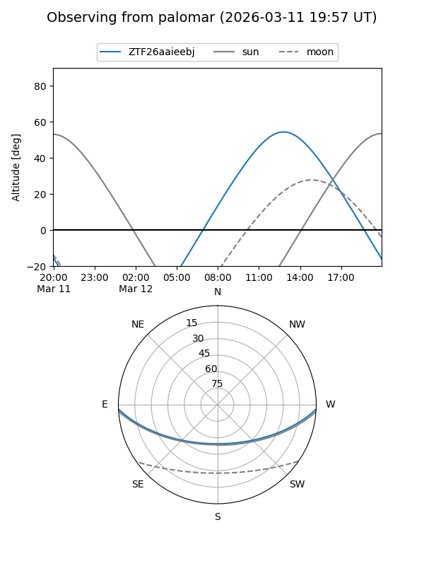

ZTF26aaieebj
Target ZTF26aaieebj at 2026-03-12 11:55
Aliases and brokers:
FINK: link
Lasair: link
ALeRCE: link
alt names
ZTF26aaieebj (ztf,fink_ztf)
Coordinates:
equatorial (ra, dec) = 244.9541,-2.10941
equatorial (HMS+DMS) = 16:19:48.99,-02:06:33.87
galactic (l, b) = (11.2992,+31.97964)
Flags:
Photometry:
last ztfr=20.43
2 ztfr detections
Lightcurve

Visibility


Additional plots